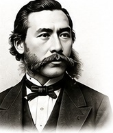
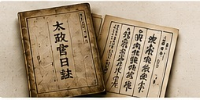
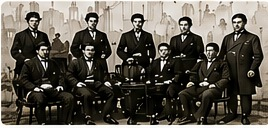
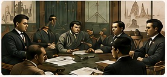
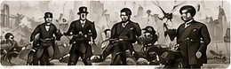
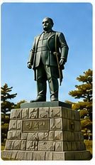
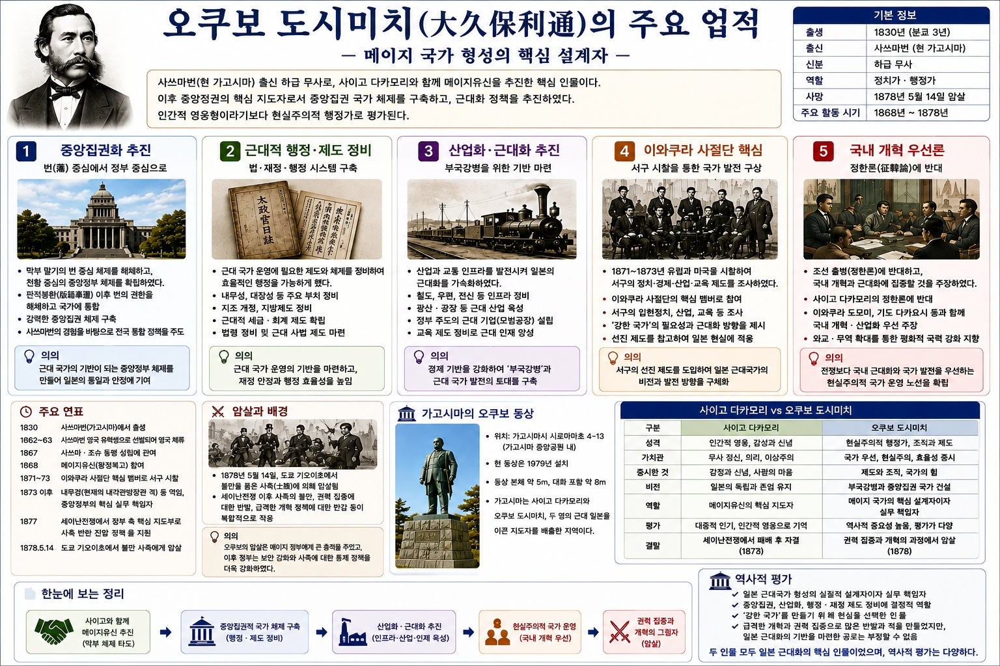

그림 출처 안내 — 이 자료의 사진·그림은 사용자가 올린 인포그래픽 이미지에서 잘라낸 것입니다. 원 촬영자·제작자·이용 허락을 알 수 없고, 화풍으로 보아 AI로 생성한 이미지가 섞여 있을 수 있습니다. 책에 싣는 용도로는 쓸 수 없으며, 출간 때는 직접 촬영하거나 이용 허락을 받은 사진·공개 도판으로 바꿔야 합니다. 그림 중 국회의사당(1936년 완공)·열차·회의 장면은 오쿠보 시대의 실제 자료가 아니라 설명용 그림입니다.
원본 인포그래픽의 오류 가능성
출생 연호: 1830년을 ‘분큐 3년’이라 적었으나 분큐 3년은 1863년입니다. 1830년은 분세이(文政) 13년 또는 덴포(天保) 원년 무렵이므로 원문 확인이 필요합니다.
연표 “1862~63 영국 유학생에 선발되어 영국 체류”: 오쿠보의 영국 체류를 확인하지 못했습니다(해당 연표 사이트에도 기록 없음). 오쿠보가 아닌 다른 사쓰마 인물과 혼동했을 가능성이 있어 삭제하거나 확인해야 합니다.
연표 “1867 사쓰마·조슈 동맹 성립”: 삿초 동맹(薩長同盟)은 1866년으로 알려져 있습니다.

오쿠보 도시미치 초상(원본에서 잘라냄 — 이미지 출처 불명)
메이지 국가 형성의 핵심 설계자
사쓰마번(현 가고시마) 출신의 하급 무사로, 사이고 다카모리와 함께 메이지 유신을 추진했습니다. 이후 중앙정권의 핵심 지도자로서 중앙집권 국가 체제를 만들고 근대화 정책을 밀어붙였습니다. 인간적 영웅형이라기보다 현실주의적 행정가로 평가됩니다.
구분
내용
출생
1830년 연호 확인 필요
출신
사쓰마번(현 가고시마)
신분
하급 무사
역할
정치가·행정가
사망
1878년 5월 14일 암살(도쿄 기오이자카)
주요 활동 시기
1868~1878년
다섯 가지 주요 업적
1. 중앙집권화 추진
번 중심에서 정부 중심으로
국회의사당(설명용 그림 — 오쿠보 시대의 건물이 아님)
막부 말기의 번 중심 체제를 해체하고 전화 중심의 중앙정부를 확립
1869 판적봉환 이후 폐번치현으로 번의 권한을 해체하고 국가에 통합
사쓰마번의 경험을 바탕으로 전국 통합 정책 주도
2. 근대적 행정·제도 정비
법·재정·행정 시스템 구축

『태정관일지(太政官日誌)』(원본에서 잘라냄)
내무성 설치(1873)와 지방제도 정비
근대적 세금·회계 제도 확립
법령 정비와 근대 사법 제도 마련
3. 산업화·근대화 추진
부국강병의 기반 마련
철도(설명용 그림)
철도·우편·전신 등 인프라 정비
광산·공장 등 근대 산업 육성(식산흥업)
정부 주도의 근대 기업(모범공장) 설립
교육 제도 정비
4. 이와쿠라 사절단 핵심
서구 시찰로 국가 발전 구상

이와쿠라 사절단 장면(설명용 그림)
1871~1873 유럽과 미국 시찰, 부사로 참여
서구의 입헌정치·산업·교육 조사
“강한 국가”의 필요성과 근대화 방향을 구상
5. 국내 개혁 우선론
정한론(征韓論)에 반대

정한론을 둘러싼 회의 장면(설명용 그림)
조선 출병(정한론)에 반대하고 국내 개혁·근대화에 집중할 것을 주장
사이고 다카모리의 정한론에 반대
이와쿠라 도모미, 기도 다카요시 등과 국내 개혁·산업 육성 우선 주장
한국과의 접점 보충
오쿠보는 1873년 사이고의 조선 파견(정한론)에 반대한 인물입니다. 다만 반대 이유는 조선을 존중해서가 아니라 국내 정비가 먼저라는 시기상조론이었습니다. 그가 이끈 정부 아래에서 1875년 운요호 사건, 1876년 강화도 조약으로 조선 압박은 이어졌습니다. 한국 독자에게는 “정한론에 반대한 사람 = 평화주의자”가 아니라는 점을 분명히 설명해야 합니다. (학습 트리 항목 e10-11 참조. 인포그래픽의 ‘평화적 국력 강화 지향’ 같은 표현은 해석이므로 근거를 확인해야 합니다.)
연표
1830사쓰마번에서 출생
1862~63영국 유학·체류 확인 필요(근거 못 찾음)
1866 (원문 1867)사쓰마·조슈 동맹(삿초 동맹) 성립에 관여 연도 수정
1868메이지 유신(왕정복고) 참여
1871~73이와쿠라 사절단 부사로 구미 시찰, 1873 귀국
1873 이후내무성 설치, 내무경으로 중앙정부 핵심
1877세이난전쟁에서 정부 측 핵심 지도부
1878.5.14도쿄 기오이자카에서 사족에게 암살
암살과 동상

암살 장면(설명용 그림)
1878년 5월 14일 도쿄 기오이자카(紀尾井坂)에서 불만을 품은 사족에게 암살당함
범인은 이시카와현 사족 시마다 이치로(島田一郎)로 알려짐
세이난전쟁 이후 사족의 불만, 권력 집중과 급격한 개혁에 대한 반감이 겹친 사건
의의: 정부는 보안을 강화하고 사족에 대한 통제 정책을 더욱 강화했습니다.

가고시마의 오쿠보 동상(원본에서 잘라냄)
위치: 가고시마시 시로야마초 4-13(원문, 가고시마 중앙공원 내)
설치: 1979년(원문)
가고시마에서는 사이고 다카모리와 오쿠보 도시미치, 두 영웅이 일본 근대화를 이끈 지도자로 기려진다
인포그래픽의 동상 위치·설치 연도 확인 필요
사이고 다카모리 vs 오쿠보 도시미치
구분
사이고 다카모리
오쿠보 도시미치
성격
인간적 영웅, 감성과 신념
현실주의적 행정가, 조직과 제도
가치관
무사 정신, 의리, 이상주의
국가 우선, 현실주의, 효율성 중시
중시한 것
감정과 신념, 사람의 마음
제도와 조직, 국가의 힘
비전
일본의 독립과 존엄 유지
부국강병과 중앙집권 국가 건설
역할
메이지 유신의 핵심 지도자
메이지 국가의 핵심 설계자이자 실무 책임자
평가
대중적 인기, 인간적 영웅으로 기억
역사적 중요성 높음, 평가가 다양
결말
세이난전쟁에서 패배 후 자결(1877)
권력 집중과 개혁 과정에서 암살(1878)
역사적 평가 (인포그래픽)
일본 근대국가 형성의 실질적 설계자이자 실무 책임자
중앙집권, 산업화, 행정·재정 제도 정비에 결정적 역할
‘강한 국가’를 만들기 위해 현실을 선택한 인물
급격한 개혁과 권력 집중으로 많은 반발과 적을 만들었지만, 일본 근대화의 기반을 마련한 공로는 부정할 수 없음
두 인물 모두 일본 근대화의 핵심 인물이었으며, 역사적 평가는 다양하다.
확인 필요 사항
출생 연호(분큐 3년 → 오류), 영국 체류, 삿초 동맹 연도(1866)
내무성 설치·내무경 취임 연월(1873년)
‘식산흥업’, 모범공장 정책의 구체적 내용과 오쿠보의 역할 범위
정한론 반대 이유(시기상조론)와 이후 한반도 정책에서의 역할
시마다 이치로 등 암살범과 동기, 기오이자카 현장 기념비
가고시마 오쿠보 동상의 위치·설치 연도
‘이와쿠라 사절단’ 실제 사진(대표 인물 사진이 남아 있음)으로 그림 교체
원본 인포그래픽

사용자가 올린 원본 인포그래픽(제목: 오쿠보 도시미치의 주요 업적)
참고
「大久保利通」, 千代田区観光協会 歴史人物 — visit-chiyoda.tokyo (1830년 출생, 1866 삿초 연합, 이와쿠라 사절단 부사·1873 귀국, 정한론 반대, 1878 기오이자카 암살·범인 시마다 이치로 확인. 영국 유학 기록 없음)
사용자 제공 인포그래픽 이미지(출처 미확인)
학습 트리 항목: e10-01 메이지 유신과 신정부 수립, e10-03 이와쿠라 사절단과 문명개화, e10-11 정한론과 1873년 정변, e10-34 오쿠보 도시미치와 메이지 국가 건설